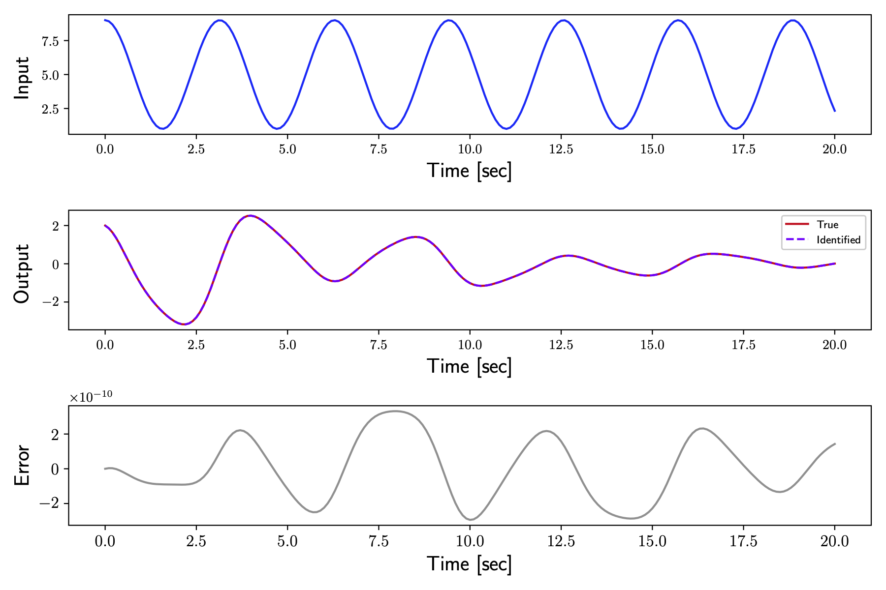
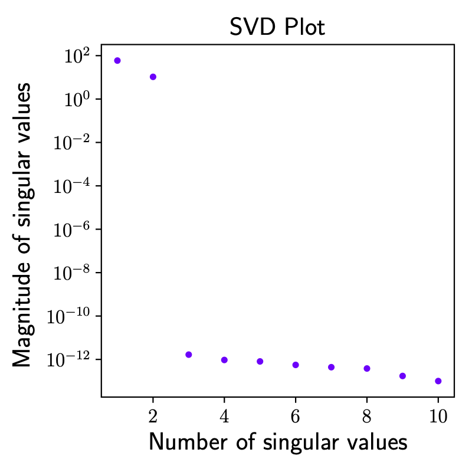

Example 3: Mass-spring-damper system with varying stifness
Description of the problem
Consider a mass-spring-damper system with one degree of freedom with no forcing input and a time-varying stifness \(k(t)\) :
This system can be seen as a continuous bilinear dynamical system, given in its state-space form by
with
The parameters are given by
The procedure in Python using the package systemID is highlighted below, with \(N_1 = N_2 = 10\), a frequency of acquisition \(f = 10\) Hz for a total time of \(20\) seconds. The procedure is using a variation of the original algorithm, taking into account the non-zero initial condition but no external forcing. Similarly to other example and ss is the case for linear systems, the realized system matrices are not unique, because the state space description is not unique. However, the input/output mapping should be unique and the linear part of the identified system matrix should have the same eigenvalues as the true system matrix. The errors in the system matrix eigenvalues (between true and identified) are
The identified system was subject to some test input and the response from the true system to the same test input was performed. The test input applied to the plant is
Code using systemID
## Imports
import numpy as np
from scipy import interpolate
from systemID.ClassesDynamics.ClassMassSpringDamperDynamics import MassSpringDamperDynamicsBilinear
from systemID.ClassesGeneral.ClassSystem import ContinuousBilinearSystem
from systemID.ClassesGeneral.ClassSignal import ContinuousSignal, OutputSignal, DiscreteSignal, subtract2Signals
from systemID.ClassesGeneral.ClassExperiments import Experiments
from systemID.ClassesSystemID.ClassBilinear import BilinearSystemIDIC
## Parameters
mass = 2
damping_coefficient = 0.5
measurements = ['position']
dynamics = MassSpringDamperDynamicsBilinear(mass, damping_coefficient, measurements)
## Identification parameters
p = 10
## Signal parameters
frequency = 10
dt = 1 /frequency
total_time_training = 22
total_time_testing = 20
number_steps_training = total_time_training * frequency + 1
number_steps_testing = total_time_testing * frequency + 1
tspan_training = np.linspace(0, total_time_training, number_steps_training)
tspan_testing = np.linspace(0, total_time_testing, number_steps_testing)
## Create system
x0 = np.array([2, -1])
system = ContinuousBilinearSystem(dynamics.state_dimension, dynamics.input_dimension, dynamics.output_dimension, [(x0, 0)], 'Nominal system', dynamics.A, dynamics.N, dynamics.B, dynamics.C, dynamics.D)
## Test signal
def u(t):
return np.array([5 + 4 * np.cos(2 * t)])
test_signal = ContinuousSignal(dynamics.input_dimension, signal_shape='External', u=u)
test_signal_d = DiscreteSignal(dynamics.input_dimension, total_time_testing, frequency, signal_shape='External', data=u(tspan_testing))
true_output = OutputSignal(test_signal, system, tspan=tspan_testing)
## Experiments
N1 = 10
N2 = 10
data_inputs_2 = np.zeros([dynamics.input_dimension, number_steps_training, N2])
data_inputs_2[:, 0, :] = np.random.randn(dynamics.input_dimension, N2)
inputs_1 = [ContinuousSignal(dynamics.input_dimension)] * N1
inputs_2 = []
systems = []
for i in range(N2):
inputs_2.append(ContinuousSignal(dynamics.input_dimension, signal_shape='External', u=interpolate.interp1d(tspan_training, data_inputs_2[:, :, i], kind='zero')))
for i in range(N1):
if i == 0:
systems.append(ContinuousBilinearSystem(dynamics.state_dimension, dynamics.input_dimension, dynamics.output_dimension, [(x0, 0)], 'Nominal system', dynamics.A, dynamics.N, dynamics.B, dynamics.C, dynamics.D))
else:
systems.append(ContinuousBilinearSystem(dynamics.state_dimension, dynamics.input_dimension, dynamics.output_dimension, [(x0 + np.random.randn(dynamics.state_dimension), 0)], 'Nominal system', dynamics.A, dynamics.N, dynamics.B, dynamics.C, dynamics.D))
experiments_1 = Experiments(systems, inputs_1, tspan=tspan_testing, total_time=total_time_testing, frequency=frequency)
experiments_2 = []
for i in range(N2):
experiments_2.append(Experiments(systems[0:N2], [inputs_2[i]] * N2, tspan=tspan_testing, total_time=total_time_testing, frequency=frequency))
## Identification
bilinear = BilinearSystemIDIC(experiments_1, experiments_2, dynamics.state_dimension, dt, p=p)
## Identified system
x0_id = bilinear.X0[:, 0]
identified_system = ContinuousBilinearSystem(dynamics.state_dimension, dynamics.input_dimension, dynamics.output_dimension, [(x0_id, 0)], 'Identified system', bilinear.A, bilinear.N, bilinear.B, bilinear.C, bilinear.D)
## Test
identified_output = OutputSignal(test_signal, identified_system, tspan=tspan_testing)
Results
Output profiles obtained from the true and identified systems are compared below.
{kind=link}
The singular value decomposition plot is displayed at different time instants.
{kind=link}